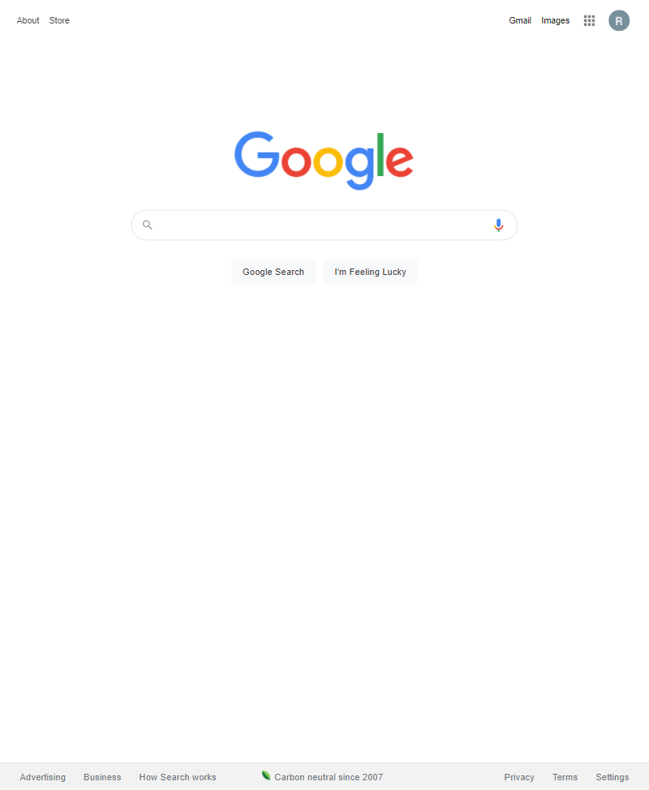

White Space
google.com
White space can provide a better user experiance by only highlighting what the web desinger is trying to show. Google does a great job of this by keeping it simple. They have some links, their name and a search bar.
Visual Hierarchy
Maunaloa
maunaloa.com
What catches the eye? By using different sizes and colors we can point readers to where we want them to look. Areas of most important to us. Mauna Loa does this by thier great use of colors. The bright green "Shop Now" is very pronouced.
Hicks law
Netflix
netflix.com
Hick's law states that, "with every additional choice increases the time required to take a decision. Netflix does a great job doing this by getting strait to the point."